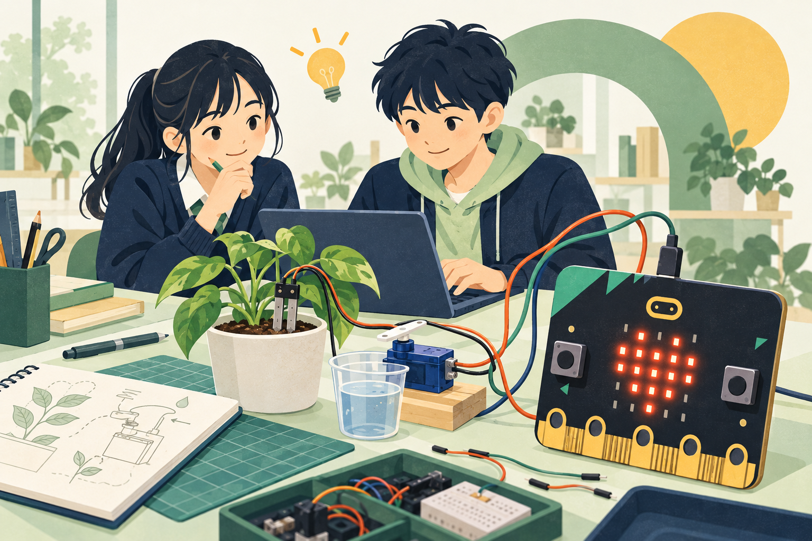
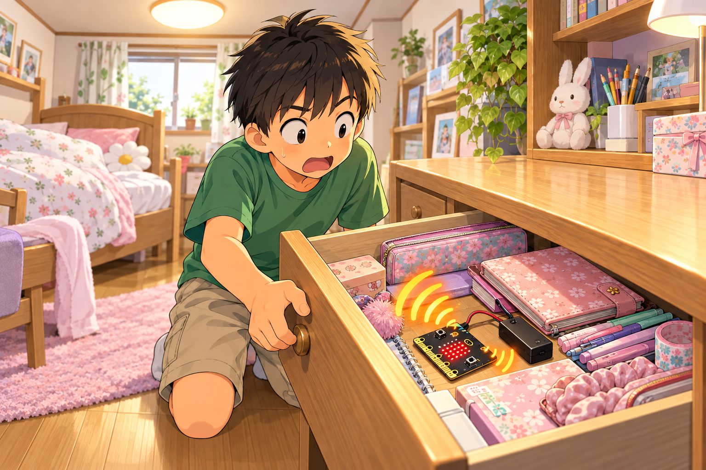

なぜ、つくろうと思った？
家族がときどき、私の机の引き出しを勝手に開ける。自分の物を断りなく触られるのがストレス。でも、不在の間に開けられても分からない。
気づく。考える。つくって、動かす。
micro:bitと習った技術で、誰かの毎日をちょっとよくする。
一人ひとつの製品づくり、ここからはじめよう。

6つのステップで制作を進めよう
確認すること・相談先を探そう
評価のポイントと証拠を確認しよう
「水やりを忘れる」「開いたことに気づけない」。
自分や身近な人の小さな困りごとが、製品の出発点です。
すでにある道具や習った技術を組み合わせて、困りごとに合う製品へ。
きみなりの工夫を加えて、動く形にしよう。
今いるところから、ひとつずつ。
カードを開くと、やることがわかります。
基本はStretch3。micro:bit MakeCodeも使えます。
使える機材はデバイスガイドで確認しよう。
教室で使うmicro:bitには内蔵スピーカーがあります。引き出し警報の例は、このスピーカーで音を鳴らします。表面のLEDを上向きに置きますが、音が出る部品は裏面です。
「何を感じて、どう動く？」を決めると、
必要な部品とプログラムが見えてきます。
考え方を知るための例です。同じ製品にする必要はありません。使える機材・接続方法はデバイスガイドで確認しよう。
①入力の値を見る → ②出力だけを動かす → ③条件でつなぐ。
どこまで動いたかを確かめると、直す場所を見つけやすくなります。
いきなり製品の絵を描く前に、
困りごとと、解決するしくみを整理しよう。
家族がときどき、私の机の引き出しを勝手に開ける。自分の物を断りなく触られるのがストレス。でも、不在の間に開けられても分からない。
自分がいないときに引き出しを開けたら、警報音を鳴らしたい。さらに、何回開けられたかを数えて、帰ってきたら確認できるようにしたい。
入力：本体の明るさセンサ（LEDを利用。外付け不要）
判断：閉じた状態から明るくなったら「開いた」
出力：内蔵スピーカーで警報音
記録・表示：回数を変数に保存し、ボタンを押すとLEDに表示
明るい間ずっと数え続けると、1回開けただけで何十回にもなってしまいます。「閉じている」から「開いた」に変わったときだけ1回増やし、閉じるまでは次を数えないようにします。
自分が使うときは警戒を解除できるようにし、不在にする前に回数を0にして警戒を開始する操作も考えよう。暗い部屋で開けた場合や、電源を切った場合にどうなるかも検証します。回数がどこに記録されるかも確認しよう。MakeCodeで本体に書き込んだ通常の変数は、電源を入れ直したりリセットしたりすると初期化されます。電源を切っても残すには、別の保存のしくみが必要です。Stretch3側の変数で数える場合は、本体とは別に管理されます。プロジェクトの再読み込みやプログラムの開始操作などで、回数がどう変わるかを実際に確かめよう。
同じ計画でも、箱だけの絵と、使う場面が見える絵では伝わり方が変わります。
手描きでもAIで作っても、「なぜ必要か」「何をするとどうなるか」が伝わるか確認しよう。

上の絵が伝えているのは「勝手に開けると警報が鳴る」場面です。回数を数える機能は、この絵だけでは伝わりません。「帰宅後、ボタンを押すとLEDに回数を表示する」別の場面や注釈も必要です。完成イメージと、実物の動作を証明する動画・配線図は区別しよう。
この例はmicro:bitの内蔵スピーカーを使います。LED・明るさセンサ面を上にして引き出しの中に置き、閉じたときと、室内灯の下で開けたときの明るさを比べ、反応する条件を決めます。暗い部屋では検知できない場合があります。LED面を上向きに保ち、裏面のスピーカーを引き出しの底に密着させない置き方も試そう。音がこもらないか、部屋の外まで聞こえるかを、先生や家族と相談して確認します。「開いたことを知らせる」製品であり、開けること自体を防ぐ製品ではありません。
Stretch3で連携する場合：Chromebook上のプログラムからmicro:bitを動かす構成では、Chromebookとの接続とプログラムの実行が必要です。接続を切っても、同じ動作やカウントが続くとは限りません。
MakeCodeで本体に書き込む場合：本体で使えるセンサや出力だけで完結するプログラムは、書き込み後、電池などで給電すればChromebookから離して動かせます。Teachable Machineなど外部の判定結果は、本体だけでは受け取れません。
この引き出し警報を留守中にも使うなら、接続を外した状態で警報とカウントが続くかを確認しよう。「何をつないで、どこでプログラムを動かしたか」も発表に添えます。
動画と記録は、きみの取り組みを伝える材料。
成功したことも、まだできないことも残そう。
「何をしたら、どう動くか」を先に書く。
Class「持ち物あり」の画像を映すと、micro:bitに✓を表示する。「なし」なら×に変わる。
正しく動いたときだけでなく、違う場面も確かめる。
背景が変わったら？ 少し暗かったら？ 物の向きが変わったら？
何が起きたかを記録し、原因と改善を考える。
背景が変わると誤認識した。対象物ではなく、背景の特徴を手がかりに判定していた可能性がある。違う背景でも学習し直して確かめる。
| 試した条件 | 結果 | 考察・次にすること |
|---|---|---|
| 学習時と同じ背景で2つのClassを映す | 各5回のうち、それぞれ5回、対応する表示に変わった | この条件では入力と出力が連動した。背景を変えて試す |
| 別の背景で「持ち物あり」を映す | 5回中2回、「なし」と判定した | 背景の影響かもしれない。複数の背景で学習し直す |
| 学習し直して、別の背景で再確認 | 5回中5回、✓を表示した | 今回の条件では改善。暗い場所ではまだ未確認 |
回数は例です。成功回数だけで評価は決まりません。条件・結果・判断がつながっていることが大切です。
何をカメラやセンサに見せたか → 判定や値 → micro:bitがどう反応したか。必要なら画面録画と実物の映像を組み合わせます。個人の顔や名前を映さなくても説明できます。
ひとりで抱えなくて大丈夫。
確かめる・見本を見る・誰かに相談する。
今日「面倒だった」「忘れた」「気づけなかった」場面を3つ書こう。その中でひとつ選び、誰がどこで困るかを具体的に。友達や家族に聞く、アイデア相談Gemと整理する方法もあります。
「何を知りたいか」「どう知らせたいか」を先に決め、デバイスガイドで探そう。一覧にない部品は使える前提にせず、Gemに一覧内の部品で代替できるか相談し、先生に確認しよう。
①電源と接続先 ②センサの値 ③出力の単独動作 ④プログラムの条件を順に確認しよう。エラーや結果を記録し、友達・先生・プログラミングGemに見せて相談できます。
カメラの明るさや背景を変えて確認しよう。Classごとに似た画像ばかりになっていないか、実際に使う場面の画像があるかも見直します。判定結果とmicro:bitの反応を別々に確認しよう。
できた部分・できなかった部分を分け、選んだ部品と理由、コード、試した結果を示そう。未完成でも取り組みは評価します。実現していない機能は「今後の案」と明記しよう。
見た目の豪華さや部品の多さではなく、困りごとへの向き合い方と、技術を使った取り組みを見ます。
テーマや部品を選んだ理由、試したことを示す。未完成でも、到達した部分を評価します。
部品未選定と、選定・試作済みは区別します。意図した入力に応じて出力が変わる。実際に動く様子を動画で示そう。
例：指定Classの画像でmicro:bitの動作が変わる。自分で設定した困りごとを、習った技術で解決。動作・考察・改良を示し、製品の価値が伝わる発表に。
熱意は、調査・検証・改善などの行動から見ます。※ ★は、この課題で目指す到達の目安です。★の数が、そのまま通知表の評定になるわけではありません。この課題では「困りごとと役立ち方」「実現イメージ」「技術的理解」の3つの視点で取り組みを確かめます。学校の観点別評価との対応や詳しい基準は、先生から示す評価表で確認してください。詳細な評価表は調整中です。
毎時間の最後、3分だけ。チェックはこのブラウザの同じプロフィールに保存されます。別の端末・プロフィールには引き継がれず、このサイトの保存データを削除すると消えます。プログラムやモデルURLは、別に保存しよう。
配線を変えるときは電源を外し、接続方法は機材の説明で確認しよう。水・熱・動く部品の実験は先生に相談。人を撮影するときは許可を取り、イラスト生成やGemへの相談に顔写真・名前などの個人情報を送らない。危険な場面は再現せず、模型などで確かめよう。
まずは文房具など、個人情報を含まない物で学習しよう。Class名にも個人名を入れないでください。人物を使う学習や、モデルをアップロードしてURLで共有する前には、先生に確認しよう。
公開用URLを知っている人は、モデルを読み込んで利用できます。モデルの公開は、学習画像そのものを公開することと同じではありませんが、学習した特徴やClass名などが含まれます。モデルURLは先生が指定した場所に記録し、むやみに広めないでください。